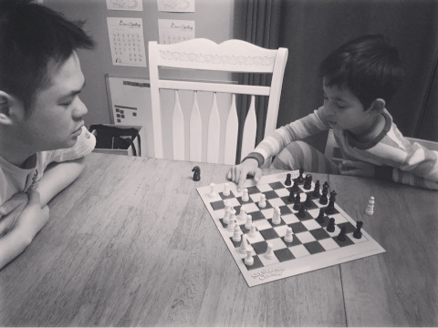

Many summers ago, Caleb went to a day camp where he learned how to play chess. He quickly learned the basic rules of chess and grew to love playing the game (almost as much as playing Minecraft). On some evenings, he will challenge the instructor to a game after dinner (and sometimes even wins!).

In chess each piece can move in a different manner. For instance,
the rook, Caleb's favorite piece, can move any number of spaces vertically
or horizontally. A knight, however, can only move in a L-shape motion:
two steps horizontally followed by one vertically, or one step horizontally
then two vertically:

Unfortunately, Caleb really dislikes the knight piece because its movement is so confusing. To help Caleb practice visualize the movement of a knight, the instructor proposes the following problem to his son:
Imagine you place a knight chess piece on a phone dialpad. Suppose you dial keys on the keypad using only hops a knight can make. Every time the knight lands on a key, we dial that key and make another hop. The starting position counts as being dialed.
What are the distinct numbers you can dial in
Nhops from a particular starting position?
Because solving this problem efficiently requires the use of recursion, Caleb asks that you help him out by programming a solution that solves this challenge.
Input¶
You will be given a series of starting positions and hops in the following format:
START HOPS
...
START HOPS
Example Input¶
6 3
0 4
Output¶
For each pair of starting positions and hops, output all possible numbers starting with the specified position and of the specified hops formed on the dialpad by using only the chess knight's motion.
Example Output¶
604
606
616
618
672
676
0404
0406
0434
0438
0492
0494
0604
0606
0616
0618
0672
0676
Note: Output the numbers in ascending order and ensure there is a single blank line between the outputs of the pairs of starting positions and hops.
Programming Challenges¶
This is inspired by this blog post: Google Interview Questions Deconstructed: The Knight’s Dialer and this 935. Knight Dialer on LeetCode.
Algorithmic Complexity¶
For each input test case, your solution should have the following targets:
| Time Complexity | O(N!), where N is the number of hops. |
| Space Complexity | O(D), where D is the number of distinct numbers from starting point. |
Your solution may be below the targets, but it should not exceed them.
Submission¶
To submit your work, follow the same procedure you used for Reading 00:
$ cd path/to/cse-30872-su26-assignments # Go to assignments repository
$ git switch master # Make sure we are on master
$ git pull --rebase # Pull any changes from GitHub
$ git switch -c challenge07 # Create and checkout challenge07 branch
$ $EDITOR challenge07/program.cpp # Edit your code
$ git add challenge07/program.cpp # Stage your changes
$ git commit -m "Challenge 07: Code" # Commit your changes
$ git push -u origin challenge07 # Send changes to GitHub
To check your code, you can use the .scripts/check.py script or curl:
$ .scripts/check.py
Checking challenge07 program.cpp ...
Result Success
Time 0.01
--------------------
Score 6.00 / 6.00
Grade 1.00 / 1.00
$ curl -F source=@challenge07/program.cpp https://dredd.h4x0r.space/code/cse-30872-su26/challenge07
{"result": "Success", "score": 6, "time": 0.016405344009399414, "value": 6, "status": 0}
Acknowledgments¶
If you collaborated with any other students or received help AI tools on this assignment, please describe this support in the description of your Pull Request.